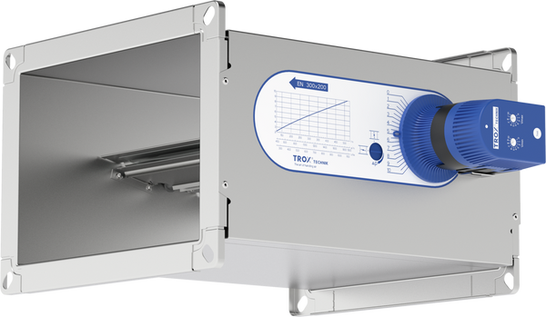

- Размеры
- 200 × 100 – 600 × 600 мм.
- Расход воздуха
- До 12 600 м³/ч.
- Принцип работы
- Механическое регулирование без внешнего питания.
- Опции
- Возможна установка электропривода для корректировки уставки.
- Стандарты
- EN 1751 Class C · VDI 6022.
TROX · CAV
Прямоугольный механический регулятор постоянного расхода воздуха для нормальных и высоких расходов.
